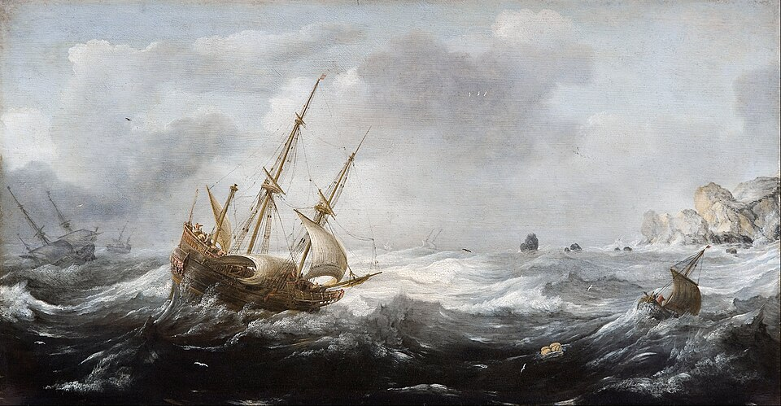
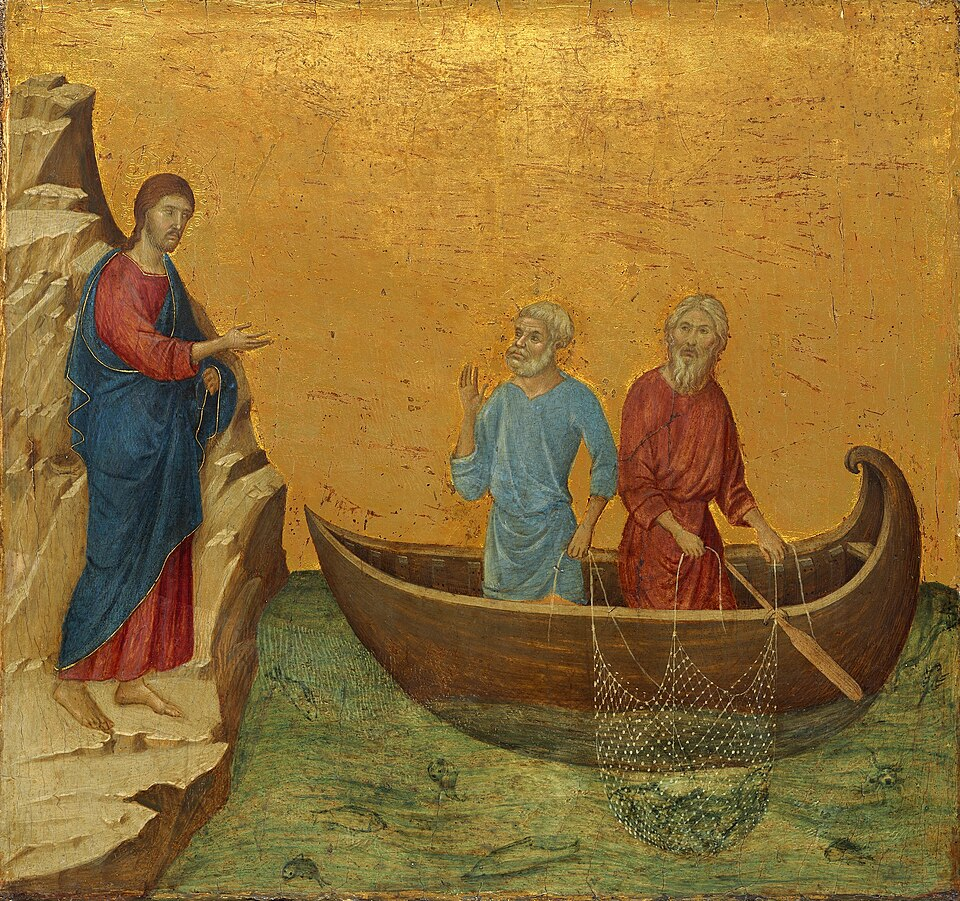
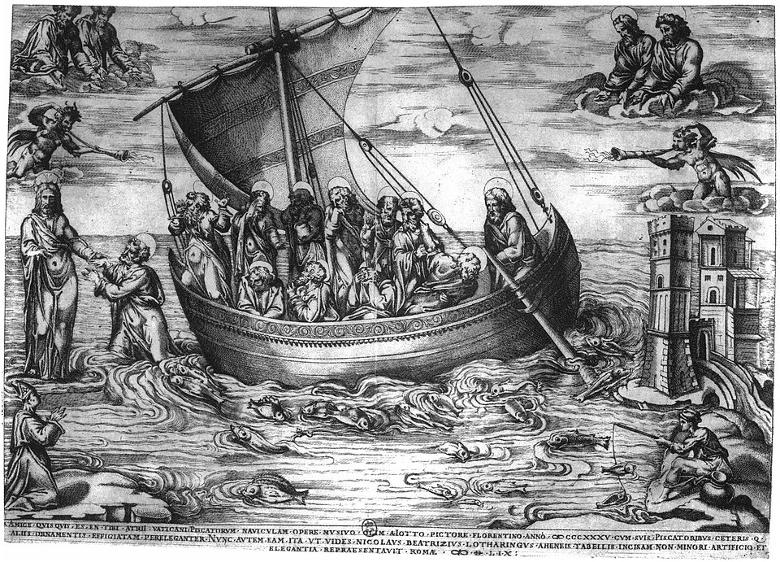
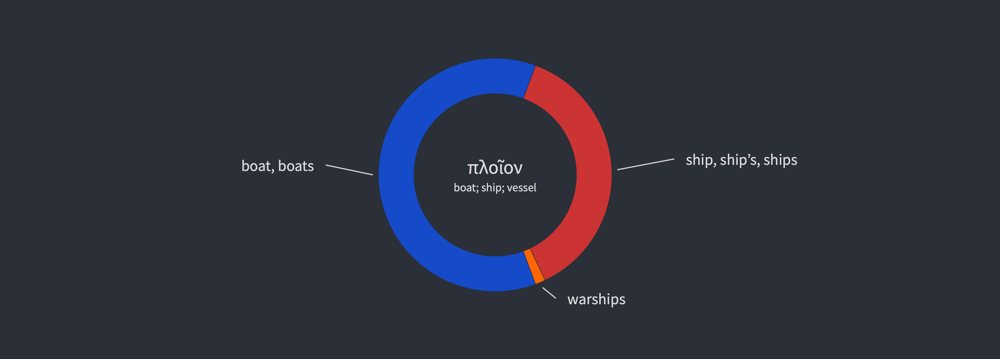
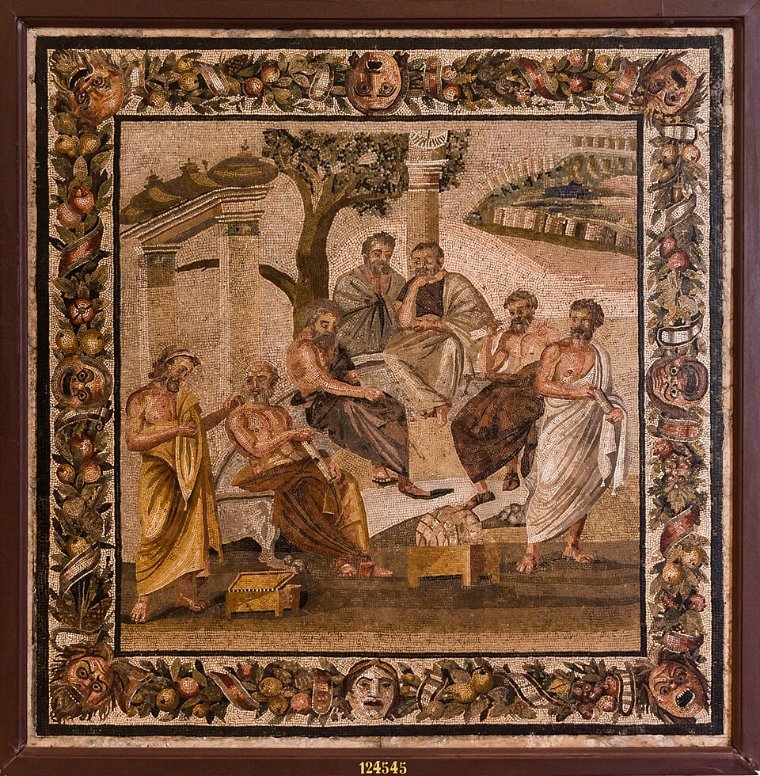
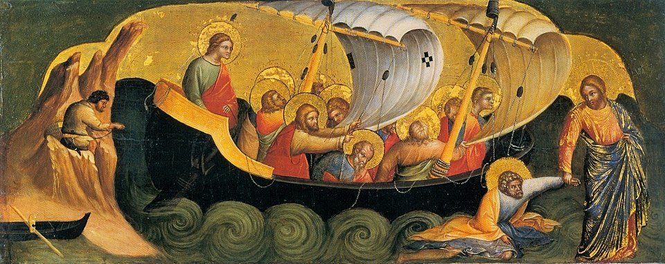

Czytaj 🇬🇧

Co wspólnego ma Papież Leon XIV. z cybernetyką? Jego zadaniem jest sterowanie Kościołem. To zadanie wymaga olbrzymiego doświadczenia, znajomości historii, ale także…


Kazanie świętego Jana Chryzostoma, w którym argumentuje, dlaczego święty Piotr jest większym filozofem niż Platon

W tym artykule zostanie pokazane, jak odnaleźć wszystkie wystąpienia danego słowa w Biblii, różne rodzaje tłumaczeń i sposoby ich graficznej prezentacji.

Fragment z Republiki Platona o sterowaniu okrętem państwa.

Wybór fragmentów ewangelicznych mówiących o łodzi piotrowej.